Intermediate Statistics Notes
Week 2 Day 1
Making Inference
Inference is the process of using information from a sample to make a general statement about an entire population. It involves using data from a subset of a population to infer something about the larger group.
Define Inference
Hypothesis Testing
Type I vs. Type II Errors – Example: Flip Flops vs. Medicine
Type I Error (FALSE POSITIVE)
- Rejecting a true null hypothesis.
- It is the probability of rejecting the null hypothesis when you should have accepted it.
- Example: A medical test incorrectly detects a disease in a healthy person.
Type II Error (FALSE NEGATIVE)
- Failing to reject a false null hypothesis.
- It is the probability of accepting the null hypothesis when you should have rejected it.
- Example: A medical test fails to detect a disease in a sick person.
In decision-making,
- Type I errors lead to UNNECESSARY ACTIONS.
- Type II errors result in MISSED DETECTIONS.
Remembering Type I and II Errors:
Hypothesis Definitions:
- Null Hypothesis (H₀): There is no fire.
- Alternative Hypothesis (H₁): There is a fire.
Type I Error (FALSE POSITIVE) – “False Alarm”
- You reject the null hypothesis when you should have accepted it.
- Example: The fire alarm goes off, but there’s no actual fire.
- Think: Overreaction—detecting something that isn’t actually there.
Type II Error (FALSE NEGATIVE) – “Missed Detection”
- You accept the null hypothesis when you should have rejected it.
- Example: You miss detecting a real fire because the alarm didn’t go off.
- Think: Underreaction—failing to detect something that actually exists.
| Decision | Accept H₀ (No Fire) | Reject H₀ (Fire Alarm Goes Off) |
|---|---|---|
| H₀ is True (No Fire) | ✅ Correct Decision | ❌ Type I Error (False Alarm) |
| H₀ is False (There is a Fire) | ❌ Type II Error (Missed Detection) | ✅ Correct Decision |
Type I Error and Significance Level
- Type I Error = Significance Level (α) = 1 – Confidence Level
- The significance level (α) is the probability of making a Type I error.
- A lower α reduces the chance of rejecting a true null hypothesis.
Example:
- A 95% confidence level means a 0.05 significance level (α = 0.05).
- This means there is a 5% chance of incorrectly rejecting a true null hypothesis.
Type II Errors and Power
- Type II error: Probability of accepting the null hypothesis when you should have rejected it.
- Power of a test: Probability of correctly rejecting a false null hypothesis.
- Power = 1 - Probability of a Type II error.
- A higher power means a lower chance of making a Type II error.
- Increasing sample size, effect size, or significance level can improve power.
Example:
- Suppose a new drug is being tested for effectiveness against a disease.
- H₀: The drug has no effect.
- H₁: The drug is effective.
- A Type II error occurs if we conclude the drug is ineffective (accept H₀)
when it actually works (H₁ is true). - The power of the test is the probability of correctly detecting the drug’s effectiveness.
- If power is 80%, it means there’s a 20% chance of failing to detect a real effect (Type II error).
Sufficient Evidence ≠ Proof
- Hypothesis testing does not prove anything.
- It only provides sufficient evidence to support or reject a hypothesis.
P-Value Requires Two Components:
- A test statistic
- The sampling distribution of the test statistic
P-value Calculation
P-value Requirements
A p-value requires two components:
- Test Statistic – A value computed from sample data, such as:
- t-score
- z-score
- F-statistic
- Sampling Distribution of the Test Statistic – Describes how the test statistic behaves under the null hypothesis.
Interpretation:
- The p-value measures how extreme the observed test statistic is, assuming the null hypothesis is true.
- A small p-value suggests evidence against the null hypothesis, potentially leading to rejection of ( H_0 ).
Data Exploration
Group 1 Analysis
Group 2 Analysis
Group 3 Analysis
Week 2 Day 2
- Take a few moments to knit your index.rmd file
- Do the Good Graphics question in the quiz
- Go over the Stephanie Analysis
Histograms (length)
Go through the four questions below for Question 3
Boxplots
Scatterplots
plot(Ozone~Temp,data=airquality,main="Relationship Between Ozone and Temperature",
xlab="Temp", ylab="Ozone",pch = 19, col="blue")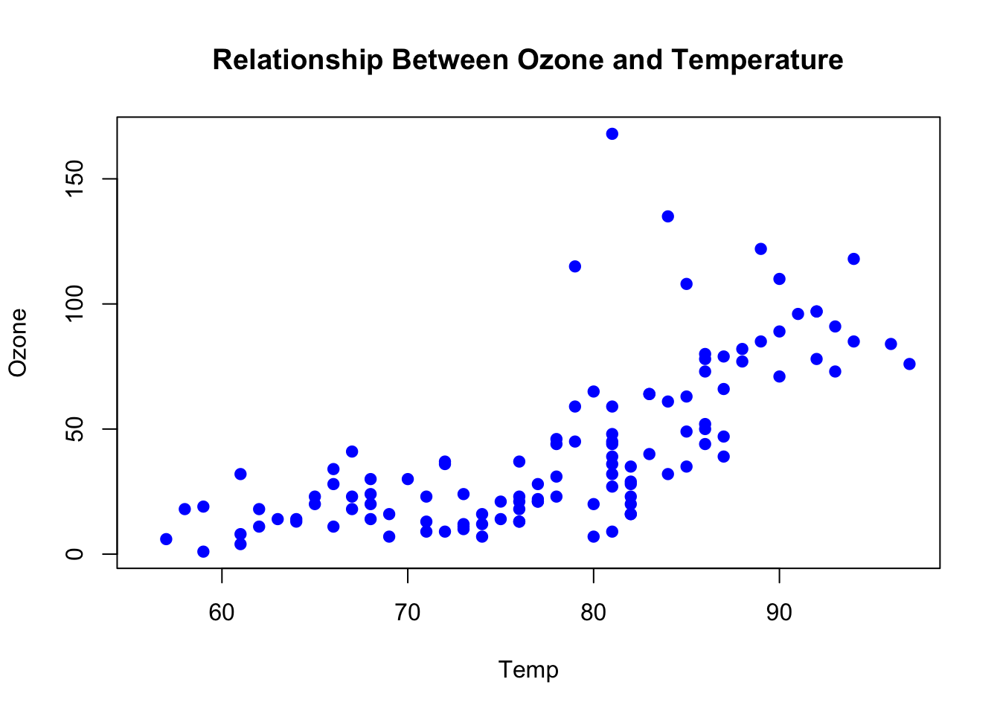
ggplot(airquality,aes(x=Temp,y=Ozone))+
geom_point(color="blue")+
labs(title="Relationship Between Ozone and Temperature",
x="Temp",
y="Ozone")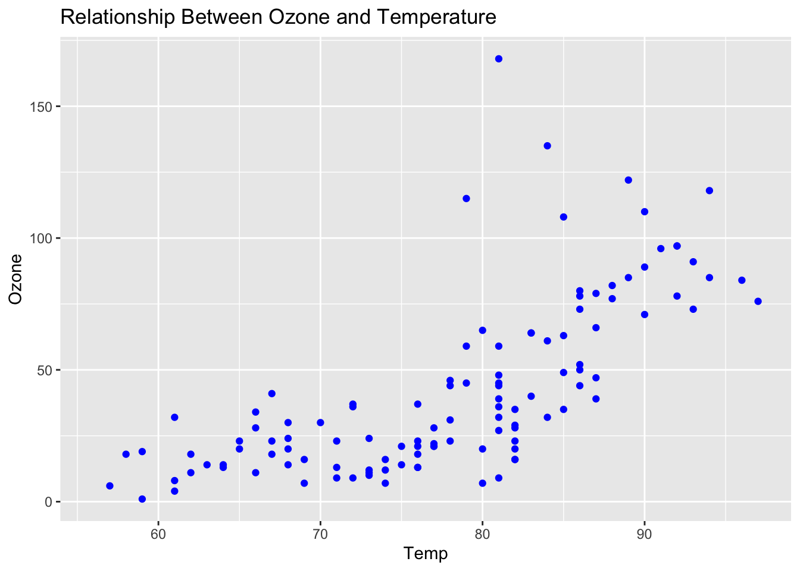
Week 3 Days 1 & 2
A) Quantitative vs Categorical Data - KidsFeet
| Min. | 1st Qu. | Median | Mean | 3rd Qu. | Max. |
|---|---|---|---|---|---|
| 21.6 | 24 | 24.5 | 24.72 | 25.6 | 27.5 |
# Quantitative Y | Categorical X (2 Groups) - length by sex
tapply(KidsFeet$length, KidsFeet$sex, summary) %>%
pander()B:
Min. 1st Qu. Median Mean 3rd Qu. Max. 22.9 24.35 24.95 25.11 25.8 27.5 G:
Min. 1st Qu. Median Mean 3rd Qu. Max. 21.6 23.65 24.2 24.32 25.1 26.7
# Quantitative Y | Multiple Categorical X - length by sex and biggerfoot
tapply(KidsFeet$length, list(KidsFeet$sex, KidsFeet$biggerfoot), summary) %>%
pander()| L | R | |
|---|---|---|
| B | 24.20000, 24.60000, 25.20000, 25.43636, 26.10000, 27.10000 | 22.9, 23.9, 24.5, 24.7, 25.5, 27.5 |
| G | 22.90000, 24.10000, 24.50000, 24.77273, 26.00000, 26.70000 | 21.600, 23.325, 23.850, 23.700, 24.175, 25.500 |
# Quantitative Y | Quantitative X - length and width
cor(KidsFeet$length, KidsFeet$width) %>%
pander()0.6411
# The function cor(KidsFeet$length, KidsFeet$width) in R calculates the Pearson correlation
# coefficient between the length and width columns of the KidsFeet dataset, measuring the
# strength and direction of their linear relationship. A result close to 1 indicates a
# strong positive correlation (as foot length increases, width also increases), while a
# result near -1 suggests a strong negative correlation (as length increases, width
# decreases). A value around 0 implies no significant linear relationship between the two
# variables.# Quantitative Y | Multiple X - length and width and sex
lm(length ~ width + sex, data = KidsFeet) %>%
pander()| Estimate | Std. Error | t value | Pr(>|t|) | |
|---|---|---|---|---|
| (Intercept) | 10.36 | 3.323 | 3.118 | 0.003575 |
| width | 1.604 | 0.3607 | 4.447 | 8.015e-05 |
| sexG | -0.1329 | 0.363 | -0.3661 | 0.7164 |
# Binomial Y | Quantitative X - sex and length - opposite x and y
glm(sex ~ length, data = KidsFeet, family = binomial) %>%
pander()| Estimate | Std. Error | z value | Pr(>|z|) | |
|---|---|---|---|---|
| (Intercept) | 12.49 | 6.966 | 1.792 | 0.07306 |
| length | -0.5074 | 0.2818 | -1.801 | 0.07174 |
B - Summary Statistics
C - Visualization
# Histogram - quantitative
hist(KidsFeet$length, main="Histogram of Kids Feet Length", xlab="Length")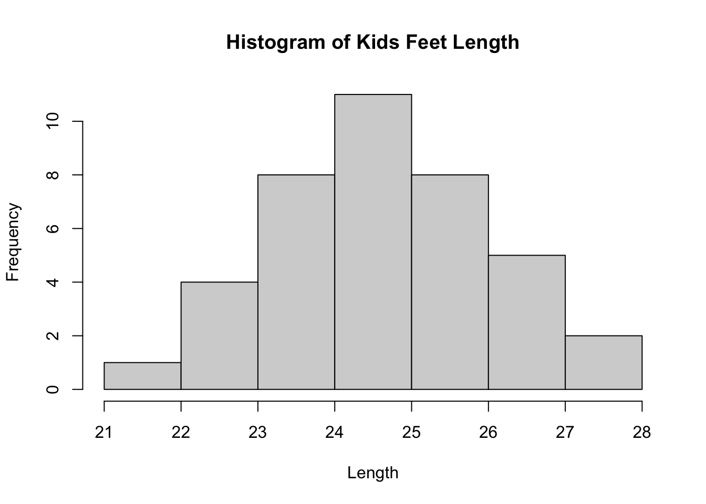
# Boxplot - quantitative
boxplot(KidsFeet$length, main="Boxplot of Kids Feet Length", xlab="Length")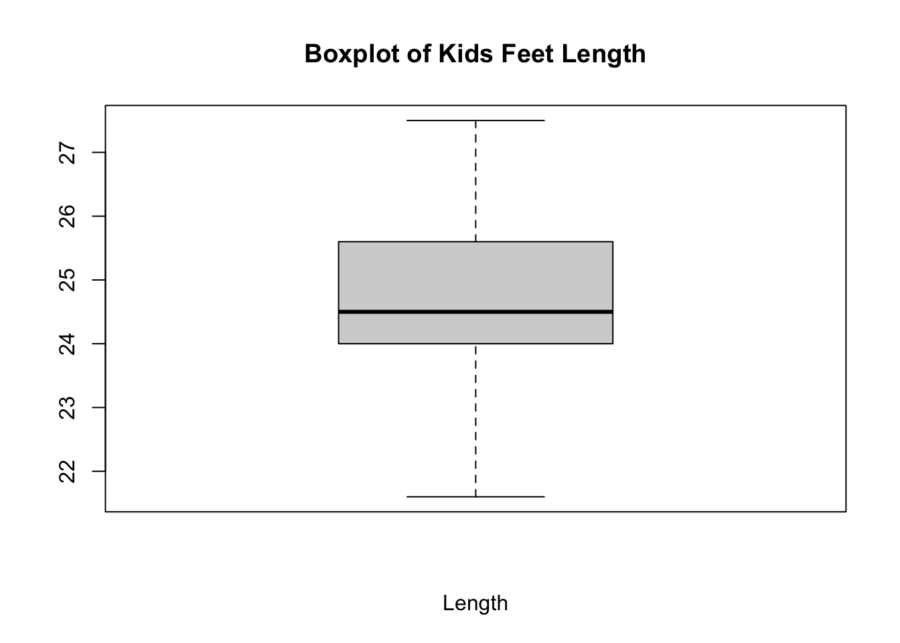
# Dot plot - quantitative
stripchart(KidsFeet$length, method = "jitter", pch = 19, col = "blue", main = "Dot Plot of Kids Feet Length")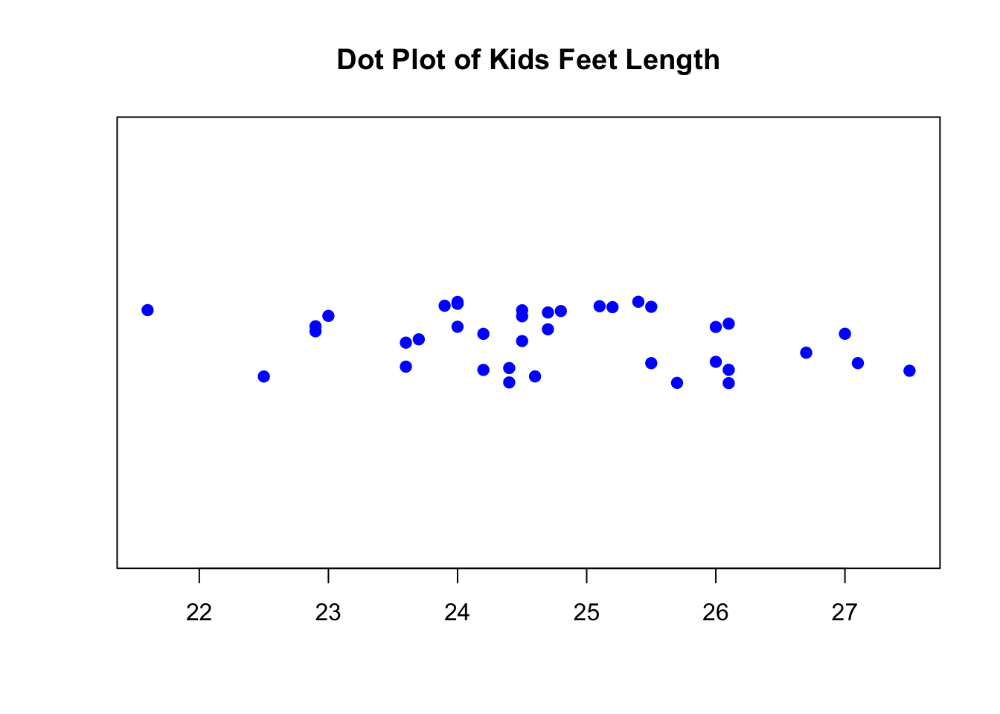
D - Answering Specific Questions
| B | G |
|---|---|
| 20 | 19 |
# What is the average length of feet in the KidsFeet dataset?
favstats(KidsFeet$length) %>% pander()| min | Q1 | median | Q3 | max | mean | sd | n | missing |
|---|---|---|---|---|---|---|---|---|
| 21.6 | 24 | 24.5 | 25.6 | 27.5 | 24.72 | 1.318 | 39 | 0 |
| sex | min | Q1 | median | Q3 | max | mean | sd | n | missing |
|---|---|---|---|---|---|---|---|---|---|
| B | 22.9 | 24.35 | 24.95 | 25.8 | 27.5 | 25.11 | 1.217 | 20 | 0 |
| G | 21.6 | 23.65 | 24.2 | 25.1 | 26.7 | 24.32 | 1.33 | 19 | 0 |
boxplot(length~sex, data=KidsFeet, main="Comparing Length of Feet Across Gender",
xlab="Gender", ylab="Length of Foot", col=c("blue","pink"))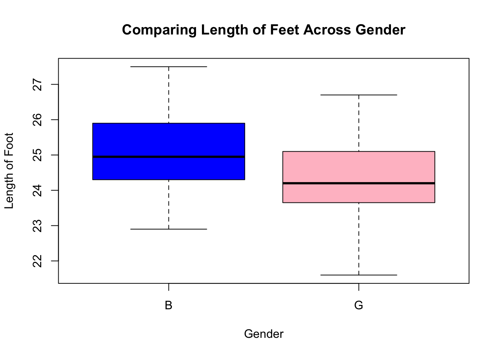
# Are there certain months of the year associated with longer feet?
favstats(length~birthmonth, data=KidsFeet) %>%
pander()| birthmonth | min | Q1 | median | Q3 | max | mean | sd | n | missing |
|---|---|---|---|---|---|---|---|---|---|
| 1 | 21.6 | 22.5 | 23.4 | 24.3 | 25.2 | 23.4 | 2.546 | 2 | 0 |
| 2 | 25.1 | 25.6 | 26.1 | 26.1 | 26.1 | 25.77 | 0.5774 | 3 | 0 |
| 3 | 22.9 | 24.65 | 25.15 | 25.77 | 27 | 25.14 | 1.218 | 8 | 0 |
| 4 | 23.6 | 23.65 | 23.7 | 24.2 | 24.7 | 24 | 0.6083 | 3 | 0 |
| 5 | 23.6 | 23.8 | 24 | 24.2 | 24.4 | 24 | 0.5657 | 2 | 0 |
| 6 | 23 | 23.75 | 24 | 24.68 | 26.7 | 24.43 | 1.588 | 4 | 0 |
| 7 | 22.5 | 23.45 | 24.4 | 25.75 | 27.1 | 24.67 | 2.312 | 3 | 0 |
| 8 | 23.9 | 24.45 | 25 | 25.55 | 26.1 | 25 | 1.556 | 2 | 0 |
| 9 | 22.9 | 24 | 24.5 | 24.6 | 27.5 | 24.7 | 1.704 | 5 | 0 |
| 10 | 24.2 | 24.5 | 24.8 | 25.1 | 25.4 | 24.8 | 0.8485 | 2 | 0 |
| 11 | 24.2 | 24.65 | 25.1 | 25.55 | 26 | 25.1 | 1.273 | 2 | 0 |
| 12 | 24 | 24.25 | 24.5 | 25 | 25.5 | 24.67 | 0.7638 | 3 | 0 |
boxplot(length~birthmonth, data=KidsFeet, col="navy",
xlab = "Numerical Birth Month", ylab="Feet Length")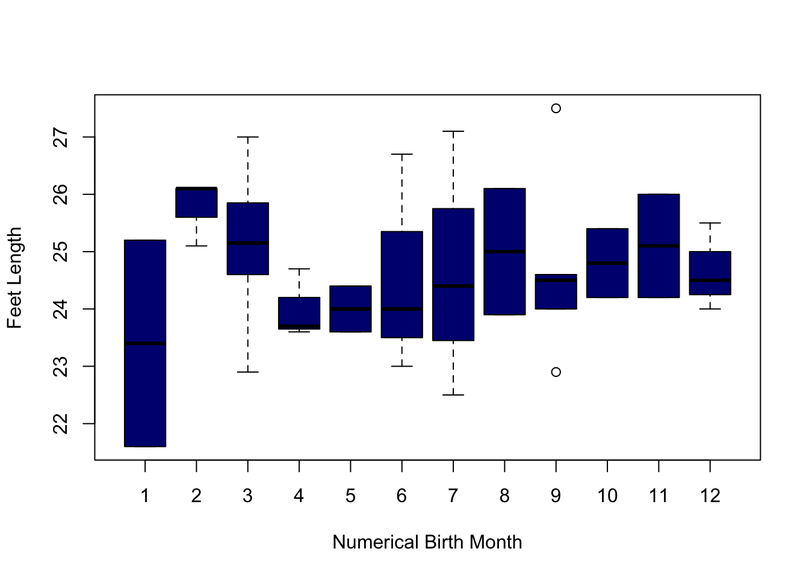
# Is there a relationship between foot length and width?
cor(KidsFeet$length, KidsFeet$width) %>%
pander()0.6411
plot(length~width, data=KidsFeet, main="Relationship Between Length and Width of Kids Feet",
xlab="Width of Foot", ylab = "Length of Foot")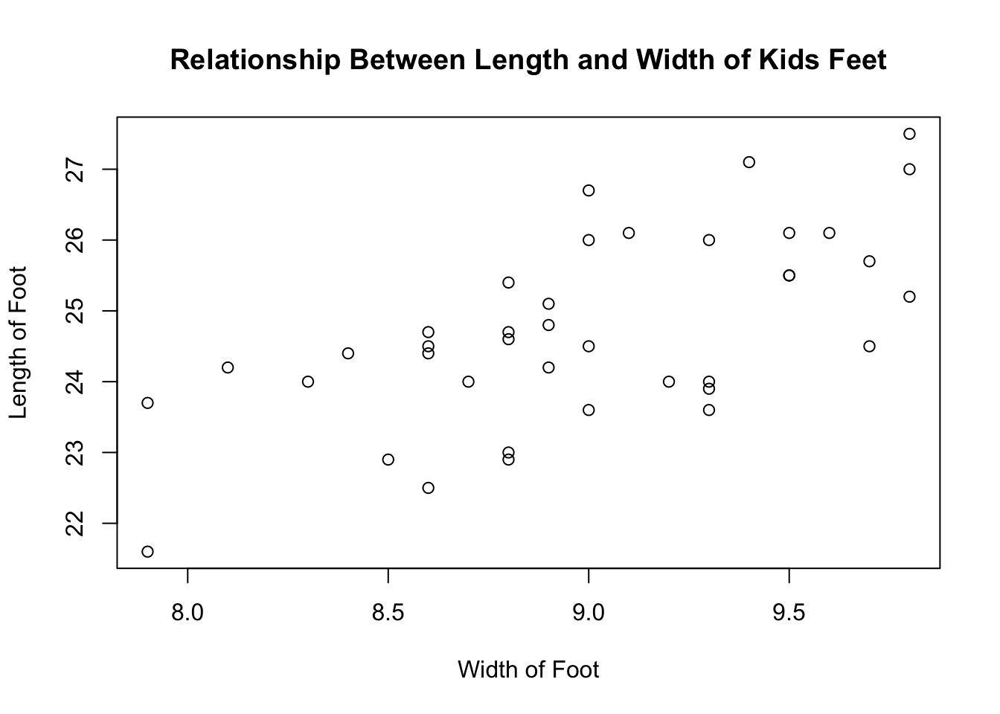
barplot(table(Kids3$sex, Kids3$season), beside = TRUE,
col = c("blue","pink"), legend.text=TRUE,
xlab="Season", ylab="Frequency", main="Count of Gender by Season")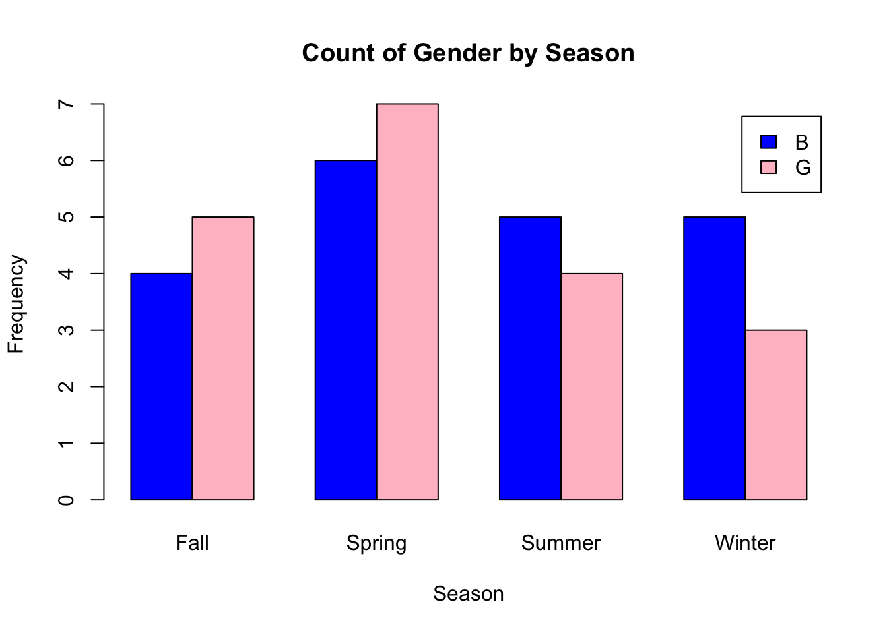
Week 4 Day 1
Parametric Distributions
The four main parametric distributions used in statistical tests:
- Normal distribution
- t-distribution
- Chi-square distribution
- F-distribution
These distributions are used in hypothesis testing and confidence interval estimation in STAT 221.
Parametric vs. Non-Parametric Methods
- Parametric methods assume that data follows a specific distribution (e.g., normal distribution).
- Non-parametric methods do not require a specific distribution, making them more flexible.
- When to use non-parametric tests:
- When the assumptions for parametric tests (e.g., normality) are not met.
- When working with small sample sizes or ordinal data.
- When the assumptions for parametric tests (e.g., normality) are not met.
- Non-parametric tests can sometimes be more powerful than parametric tests when assumptions are violated.
Example of a t-Test
| Test statistic | df | P value | Alternative hypothesis | mean of x |
|---|---|---|---|---|
| -1.787 | 38 | 0.082 | two.sided | 24.72 |
Hypotheses:
- Null Hypothesis (H₀): μ = 25.1
- Alternative Hypothesis (Hₐ): μ ≠ 25.1
- Level of significance: 0.05
If the p-value is greater than alpha (0.05), we fail to reject H₀. Otherwise, we reject H₀.
Example of a Paired t-Test
KidsFeet3 <- KidsFeet %>%
mutate(width3 = 3 * width, difference = length - width3)
t.test(KidsFeet3$length, KidsFeet3$width3, mu = 0, paired = TRUE,
alternative = "two.sided", conf.level = 0.95) %>% pander()| Test statistic | df | P value | Alternative hypothesis | mean difference |
|---|---|---|---|---|
| -11.53 | 38 | 5.668e-14 * * * | two.sided | -2.254 |
Example of an Independent Samples t-Test
Checking Assumptions
Normality Assumption for One-Sample t-Test
Normality Assumption for Paired t-Test
Normality Assumption for Independent Samples t-Test

Graphics
Boxplot for One-Sample t-Test
Boxplot for Paired t-Test
Boxplot for Independent Samples t-Test
Numerical Summaries
| min | Q1 | median | Q3 | max | mean | sd | n | missing |
|---|---|---|---|---|---|---|---|---|
| 21.6 | 24 | 24.5 | 25.6 | 27.5 | 24.72 | 1.318 | 39 | 0 |
| min | Q1 | median | Q3 | max | mean | sd | n | missing |
|---|---|---|---|---|---|---|---|---|
| -4.6 | -3.35 | -2.1 | -1.25 | -3.553e-15 | -2.254 | 1.221 | 39 | 0 |
Writing Hypotheses in LaTeX
\[ H_0: \mu = 10 \\ \]
\[ H_a: \mu \neq 10 \]
Week 6 Day 1
ANOVA Analysis
Tasks
- Find the ANOVA using Statistics Notebook.
- Compare the difference between t-test and ANOVA using the
index.htmlfile. - Go through the Overview, Explanation, and Instructions in the Textbook.
Defining Factor and Levels in airquality
- The
Monthvariable in theairqualitydataset is a factor with levels: 5, 6, 7, 8, and 9.
Two-Way ANOVA Preview
- We will cover two-way ANOVA next week.
Numerical and Graphical Summary - airquality

ggplot(data = airquality, aes(x = as.factor(Month), y = Wind)) +
geom_boxplot(fill = c("blue", "red", "yellow", "green", "purple"))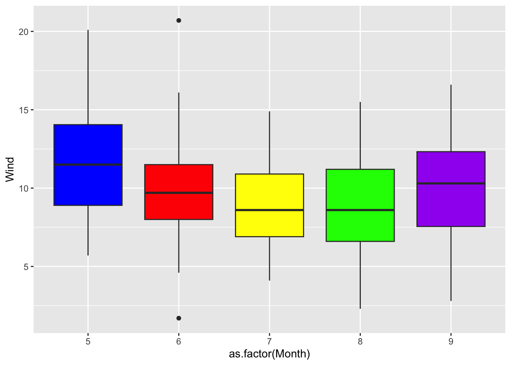
| Month | min | Q1 | median | Q3 | max | mean | sd | n | missing |
|---|---|---|---|---|---|---|---|---|---|
| 5 | 5.7 | 8.9 | 11.5 | 14.05 | 20.1 | 11.62 | 3.531 | 31 | 0 |
| 6 | 1.7 | 8 | 9.7 | 11.5 | 20.7 | 10.27 | 3.769 | 30 | 0 |
| 7 | 4.1 | 6.9 | 8.6 | 10.9 | 14.9 | 8.942 | 3.036 | 31 | 0 |
| 8 | 2.3 | 6.6 | 8.6 | 11.2 | 15.5 | 8.794 | 3.226 | 31 | 0 |
| 9 | 2.8 | 7.55 | 10.3 | 12.32 | 16.6 | 10.18 | 3.461 | 30 | 0 |
One-Way ANOVA - airquality
Checking Assumptions
One-Way ANOVA - chickwts
Hypotheses
\[ H_0: \mu_1 = \mu_2 = \mu_3 = \mu_4 = \mu_5 = \mu_6 \] \[ H_a: \text{at least one } \mu \text{ is different} \]
Numerical and Graphical Summary

ggplot(data = chickwts, aes(y = weight, x = feed)) +
geom_boxplot(fill = c("blue", "white", "green", "yellow", "orange", "brown"))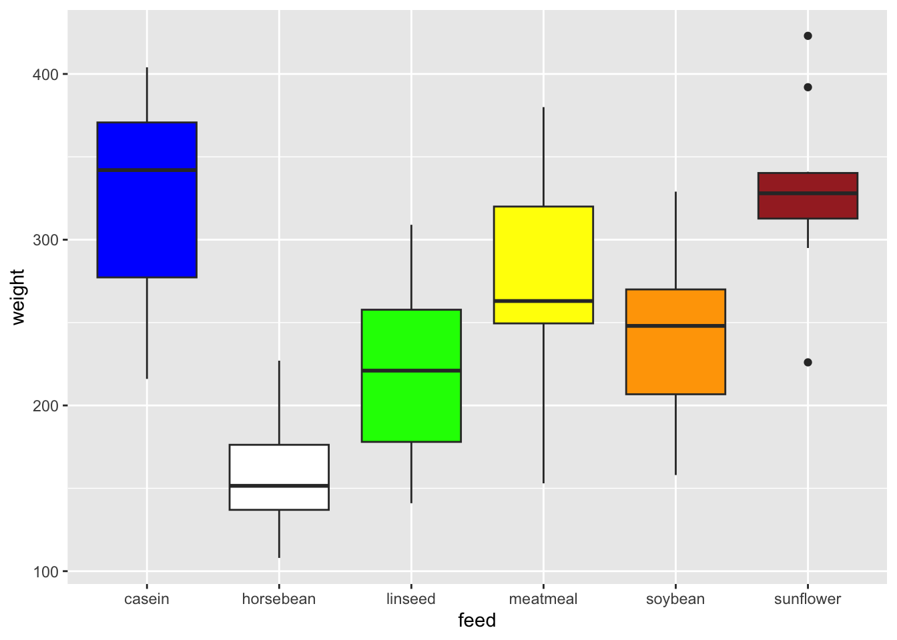
xyplot(weight ~ feed, data = chickwts,
main = "Effect of Feed Type on Chicken Growth",
ylab = "Adult Weight of Chickens (g)",
xlab = "Type of Feed (Blue line shows mean weights per type)",
type = c("p", "a"))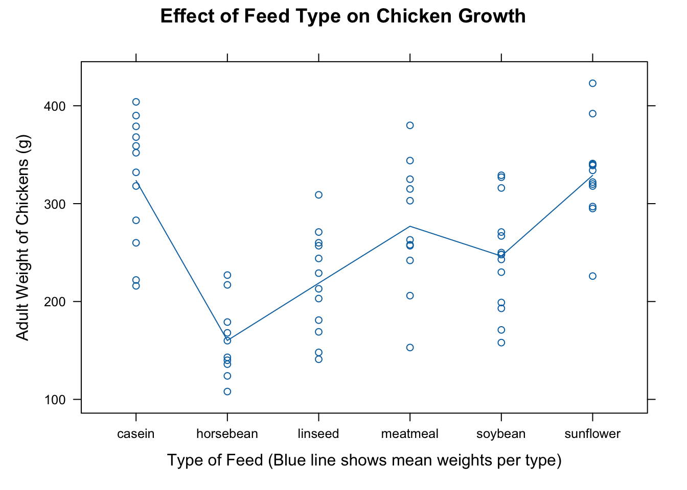
| feed | mean | sd | n |
|---|---|---|---|
| casein | 323.6 | 64.43 | 12 |
| horsebean | 160.2 | 38.63 | 10 |
| linseed | 218.8 | 52.24 | 12 |
| meatmeal | 276.9 | 64.9 | 11 |
| soybean | 246.4 | 54.13 | 14 |
| sunflower | 328.9 | 48.84 | 12 |
One-Way ANOVA - chickwts
Checking Assumptions
Two-Way ANOVA - warpbreaks
Hypotheses
\[ H_0: \mu_1 = \mu_2 = \mu_3 = \mu \text{ for tension} \] \[ H_a: \text{at least one } \mu \text{ is different for tension} \] \[ H_0: \mu_1 = \mu_2 = \mu \text{ for wool} \] \[ H_a: \text{at least one } \mu \text{ is different for wool} \] \[ H_0: \text{ The effect of tension is the same for all types of wool} \] \[ H_a: \text{ The effect of tension is not the same for all types of wool} \]
Numerical Summaries - warpbreaks
warpbreaks %>%
group_by(tension) %>%
summarise(ave = mean(breaks), sd = sd(breaks), SampleSize = n()) %>% pander()| tension | ave | sd | SampleSize |
|---|---|---|---|
| L | 36.39 | 16.45 | 18 |
| M | 26.39 | 9.121 | 18 |
| H | 21.67 | 8.353 | 18 |
warpbreaks %>%
group_by(wool) %>%
summarise(ave = mean(breaks), sd = sd(breaks), SampleSize = n()) %>% pander()| wool | ave | sd | SampleSize |
|---|---|---|---|
| A | 31.04 | 15.85 | 27 |
| B | 25.26 | 9.301 | 27 |
warpbreaks %>%
group_by(wool, tension) %>%
summarise(ave = mean(breaks), sd = sd(breaks), SampleSize = n()) %>% pander()| wool | tension | ave | sd | SampleSize |
|---|---|---|---|---|
| A | L | 44.56 | 18.1 | 9 |
| A | M | 24 | 8.66 | 9 |
| A | H | 24.56 | 10.27 | 9 |
| B | L | 28.22 | 9.859 | 9 |
| B | M | 28.78 | 9.431 | 9 |
| B | H | 18.78 | 4.893 | 9 |
Graphical Summaries - warpbreaks
xyplot(breaks ~ wool, data = warpbreaks, type = c("p", "a"),
main = "Type of Wool", col = 'blue',
xlab = "Type of Wool", ylab = "Number of Warps that Broke")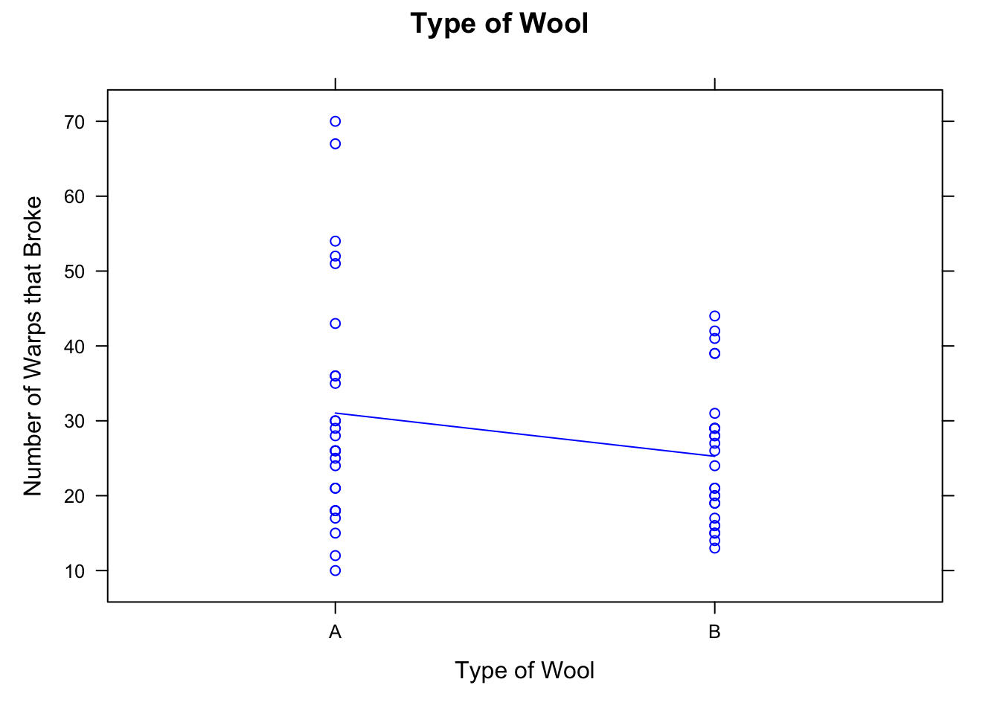
xyplot(breaks ~ tension, data = warpbreaks, type = c("p", "a"),
main = "Type of Tension", col = 'blue',
xlab = "Type of Tension", ylab = "Number of Warps that Broke")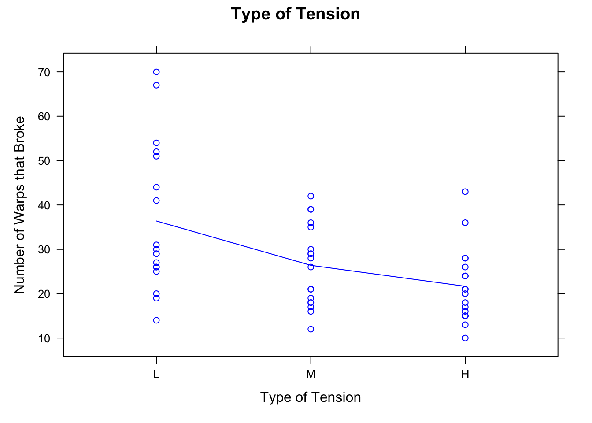
xyplot(breaks ~ tension, data = warpbreaks, groups = wool, type = c("p", "a"),
main = "Significance of Interaction",
auto.key = list(corner = c(1, 1)))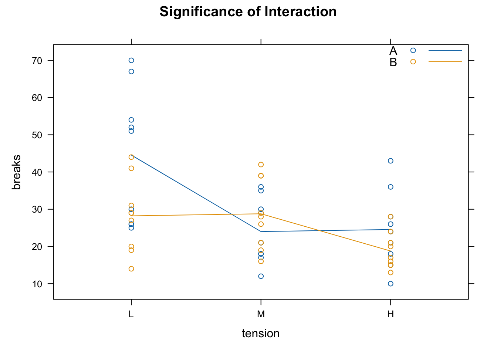
Inferential Statistics - warpbreaks
warp.aov <- aov(breaks ~ wool + tension + wool:tension, data = warpbreaks) pander(summary(warp.aov))
par(mfrow = c(1, 2)) plot(warp.aov, which = 1:2, pch = 16)